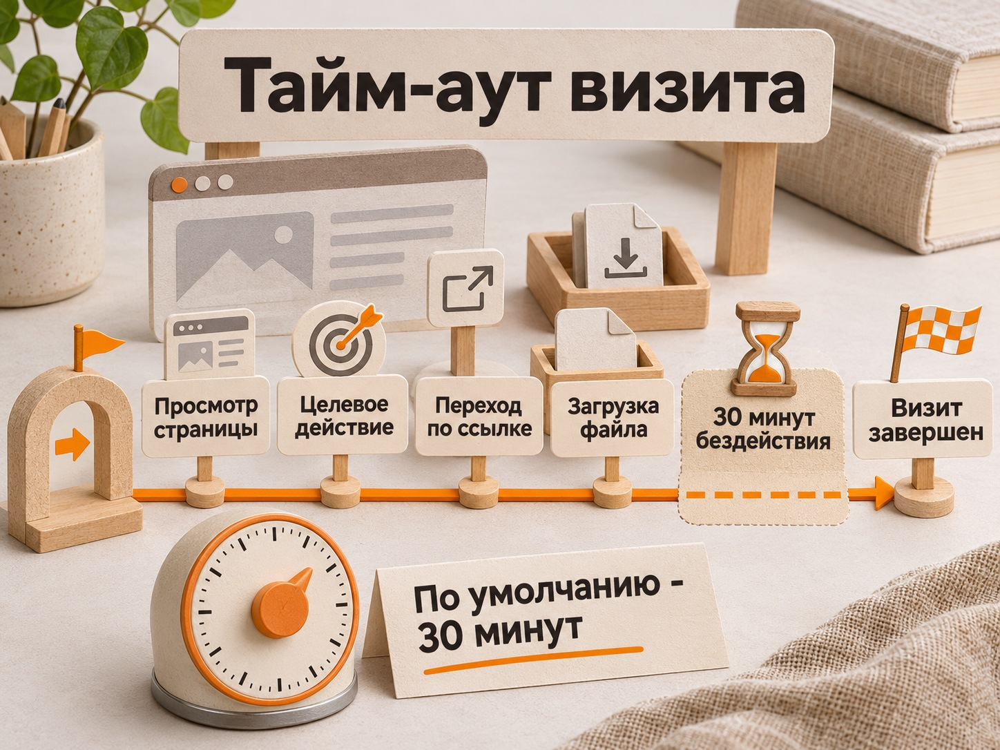

Яндекс Метрика
Тайм-аут визита в Яндекс Метрике: что это и когда менять
Тайм-аут визита - это период бездействия, после которого Яндекс Метрика завершает визит. По умолчанию он составляет 30 минут. Изменять значение стоит только тогда, когда длительная пауза действительно является частью сценария пользователя и мешает правильно читать отчеты.
Само открытие вкладки не продлевает визит. Метрика учитывает активность: просмотры страниц, переходы по внешним ссылкам, загрузки файлов и отправку событий и целей, которые передаются счетчику.
Что такое тайм-аут визита в Яндекс Метрике
Визит объединяет последовательность действий одного посетителя на одном счетчике. Пока между действиями нет периода бездействия, они относятся к одному визиту.
Когда активность прекращается на установленное время, визит считается завершенным. Если посетитель возвращается после этого и снова выполняет действие, Метрика начинает новый визит.

Поэтому тайм-аут влияет не на сам факт посещения сайта, а на границу между одним визитом и следующим. Это важно для длительности визита, глубины просмотра, источников и анализа действий внутри сессии.
Какие действия продолжают визит
Продолжение визита связано с новой активностью, которую получает счетчик. К таким действиям относятся:
- просмотр другой страницы;
- переход по внешней ссылке;
- загрузка файла;
- достижение цели или отправка события через код Метрики;
- передача параметров и других предусмотренных счетчиком событий.
Например, пользователь может изучать страницу несколько минут, открыть следующий раздел и продолжить тот же визит. Если он просто оставил вкладку открытой и не выполняет действий, время бездействия продолжает отсчитываться.
При анализе длинных материалов это различие особенно важно. Время, которое человек провел перед открытой страницей без нового события, не нужно автоматически считать активным временем визита.
Где изменить тайм-аут визита
Настройка находится в параметрах счетчика Яндекс Метрики. Откройте нужный счетчик, перейдите в раздел «Настройки», затем выберите «Счетчик» и найдите блок дополнительных настроек.
- Откройте Яндекс Метрику и выберите нужный счетчик.
- Перейдите в раздел «Настройки».
- Откройте вкладку или раздел «Счетчик».
- Найдите поле «Тайм-аут визита в минутах».
- Укажите целое значение от 30 до 360 и сохраните настройку.
Перед сохранением запишите прежнее значение и дату изменения. Это понадобится, если позже придется сопоставлять отчеты до и после настройки.
Когда оставить значение по умолчанию
30 минут обычно оставляют, если пользователь проходит обычный путь без длительных пауз. Например, читает несколько страниц, выбирает товар, смотрит услугу или заполняет короткую форму.
В такой ситуации изменение тайм-аута не добавляет аналитике нового смысла. Оно только меняет границу визита, из-за чего привычные отчеты придется заново интерпретировать.
Не стоит менять настройку ради роста глубины просмотра или длительности визита. Эти показатели должны описывать поведение пользователей, а не улучшаться за счет другого правила подсчета.
Когда менять тайм-аут визита
Изменение имеет смысл проверить, когда длительная пауза является ожидаемой частью сценария и после нее пользователь продолжает тот же осмысленный процесс.
| Сценарий | Что проверить |
|---|---|
| Длинное изучение продукта | Может ли посетитель надолго отложить страницу, а затем вернуться к тому же выбору |
| Обучение и видео | Есть ли паузы между частями материала и последующее действие на сайте |
| Длинная форма | Может ли заполнение прерываться на время без нового события |
Даже в этих случаях не нужно сразу выбирать максимальное значение. Сначала зафиксируйте проблему, определите ожидаемую длину паузы и оцените, какие отчеты и цели могут измениться.
Когда изменение исказит сравнение данных
После смены тайм-аута визит определяется по другому правилу. Поэтому периоды до и после изменения нельзя механически объединять в одну динамику.
Например, один и тот же пользовательский путь может быть разделен на два визита при одном значении и остаться одним визитом при другом. Из-за этого меняется состав визитов, к которым относятся длительность, глубина просмотра, внутренние переходы и действия пользователя.
Проблема возникает, когда настройку меняют в середине рекламного теста, а затем сравнивают стоимость и конверсию без пометки о дате. В таком отчете одновременно смешиваются изменения поведения и изменения методики учета.
Как проверить влияние на отчеты и цели
Проверку проводите как отдельный мини-тест. Не меняйте одновременно тайм-аут, цели, структуру рекламных кампаний и состав трафика, иначе будет сложно понять причину расхождений.
- Запишите прежний тайм-аут и дату его изменения.
- Выберите период до изменения и сопоставимый период после него.
- Сравните одинаковые источники, сегменты и типы страниц.
- Отдельно посмотрите визиты, длительность, глубину просмотра и внутренние переходы.
- Проверьте, как в обоих периодах учитываются целевые действия.
Для дополнительного разреза можно использовать сегменты в Яндекс Метрике. Сегментирование помогает не смешивать весь трафик сайта с теми пользователями, для которых длинная пауза действительно характерна.
Если вы анализируете поведение по записям, дополнительно учитывайте как интерпретировать Вебвизор и карты Яндекс Метрики. Продолжительность визита зависит от настройки тайм-аута, поэтому сравнение сессий требует одинакового контекста.
Цель не становится чаще только потому, что тайм-аут увеличили. Проверять нужно не только число достижений, но и то, к какому визиту и периоду они относятся.
Частые ошибки
Изменение ради красивого показателя
Увеличение тайм-аута может изменить длительность и глубину визитов, но не улучшает содержание сайта и не добавляет реальных действий. Сначала ищите причину поведения пользователей, а затем решайте, нужна ли другая граница визита.
Сравнение периодов без пометки
Если дата и новое значение не записаны, через несколько недель трудно объяснить скачок в отчетах. Настройку нужно фиксировать рядом с датами запуска рекламы, изменениями сайта и корректировками целей.
Изменение нескольких настроек сразу
Одновременная смена тайм-аута, целей и рекламной структуры лишает проверку понятной точки отсчета. Для корректного вывода меняйте одну существенную настройку за раз.
Коротко
Тайм-аут визита в Яндекс Метрике - это время бездействия, после которого текущий визит завершается. Базовое значение составляет 30 минут, а доступный диапазон - от 30 до 360 минут.
Оставляйте 30 минут для обычных сценариев. Проверяйте изменение только для длинного изучения продукта, обучения, видео или форм с длительным заполнением. После смены настройки сравнивайте периоды отдельно и фиксируйте ее влияние на визиты и цели.